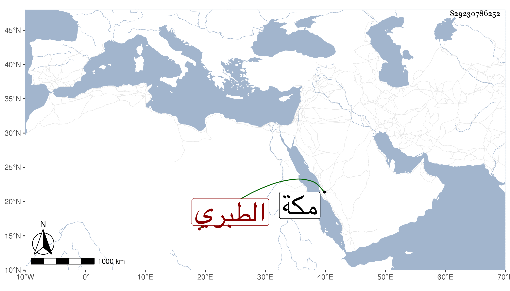

0902Sakhawi.DawLamic.ITO20230111-ara1.EIS1600.829230786252
Biography ID: 829230786252
598
فاطمة ابنة عبد الواحد بن الزين محمد بن أحمد بن محمد بن المحب أحمد بن عبد الله الطبري ، أمها عائشة المدعوة سعادة ابنة محمد بن فتح الطائفي . أحضرت في الرابعة سنة أربع عشرة وثمانمائة على جدها الزين الطبري واجاز لها في سنة ست وثلاثين فما بعدها جماعة ، وتزوجها المحيوى عبد القادر المالكي فولدت له أحمد وعائشة . ماتت في ربيع الأول سنة احدى وثمانين بمكة .
